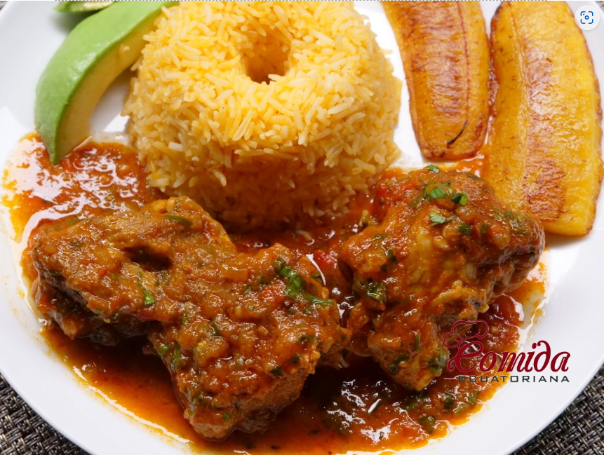

| Inicio | Recetas | Acerca De |
|---|
|  | Receta del Seco de Chancho Ecuatoriano Receta del seco de chancho, un delicioso platillo típico ecuatoriano preparado con carne de chancho o cerdo que se cocina a fuego lento en salsa de cerveza y jugo de naranjilla con cebolla, pimiento verde, comino, culantro
Ingredientes
Sazonar los cubos de chancho con comino y sal. Dorar los trozos de carne en aceite o manteca con color en una olla. Licuar los tomates, la cebolla, las pepas de ajo, los pimientos, el jugo de naranjilla, y cerveza. Agregar lo licuado a la carne de chancho, añadir el ají para seco, y dejar que hierva. Reducir la temperatura, tapar la olla, y cocinar a fuego lento por una hora o hasta que la carne este suave. Rectificar la sal. Servir con arroz y los platillos acompañantes de su agrado. |
|---|